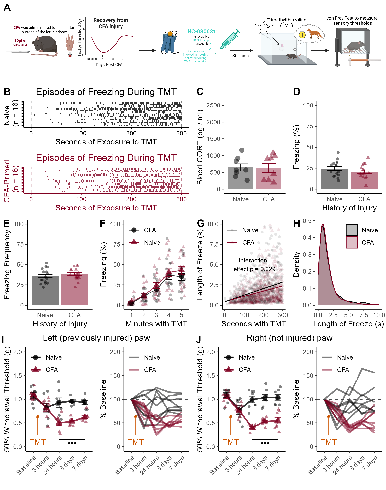

Figure 6

Figure 6. Sensitization of TRPA1 signaling regulates enhanced circulating corticosterone and freezing during TMT among CFA-primed mice. (A) Timeline of experimental procedures. Mice were injected with CFA and given 10 days to recover. Thirty minutes before a single TMT exposure, mice were injected with the TRPA-1 antagonist HC30031. (B) Raster plots of freezing behavior across the TMT session. (C) TRPA-1 antagonism normalizes circulating levels of corticosterone between pain-naive and CFA-primed mice. (D) TRPA-1 antagonism also normalizes levels of freezing during TMT exposure for CFA-primed mice. (E) Blockade of TRPA-1 signalling does not prevent the increase in freezing across the session. (F) Linear relationships between time spent with TMT and length of freezing episodes. (G) Density plots showing that TRPA-1 antagonism normalized the difference in length for freezing bouts. (H) Sensory responses after TMT in the left hind paws. (I) Sensory responses after TMT in the right hind paws. Data displayed as mean +/- SEM. *** indicates p < 0.001.
We administered the TRPA1 receptor antagonist HC30031 (30 mg/kg, i.p.) to CFA-primed and pain-naive mice 30 minutes before a single five-minute TMT exposure (Figure 6A). TRPA1 antagonism did not prevent TMT-induced freezing behavior (Figure 6B); mice still spent significantly more time freezing during the TMT session compared to a baseline session without TMT (t31 = 13.18 , p < 0.001; data not shown).
Blood CORT Levels
##
## Two Sample t-test
##
## data: CORT by Pain
## t = 0.081537, df = 14, p-value = 0.9362
## alternative hypothesis: true difference in means between group Naive and group CFA is not equal to 0
## 95 percent confidence interval:
## -349.6575 377.2933
## sample estimates:
## mean in group Naive mean in group CFA
## 648.0151 634.1972However, blocking TRPA1 receptors during TMT exposure occluded enhanced corticosterone release (p = 0.93; Figure 6C).
Percent Freezing During TMT
b <- data %>%
filter(Behavior == "freeze") %>%
group_by(ID,Condition) %>%
summarise(
sum=sum(Duration),
Number=n(),
) %>%
mutate(Perc = (sum / 300)*100) %>%
mutate(Av_DUR = (sum / Number)) ## `summarise()` has grouped output by 'ID'. You can override using the `.groups`
## argument.##
## Two Sample t-test
##
## data: Perc by Condition
## t = 1.1266, df = 30, p-value = 0.2688
## alternative hypothesis: true difference in means between group Naive and group CFA is not equal to 0
## 95 percent confidence interval:
## -2.872619 9.941494
## sample estimates:
## mean in group Naive mean in group CFA
## 24.38940 20.85496HC30031 treatment also prevented exaggerated freezing behavior for CFA-primed mice (p = 0.27; Figure 6D)
Freezing Frequency During TMT
b <- data %>%
filter(Behavior == "freeze") %>%
group_by(ID,Condition) %>%
summarise(
sum=sum(Duration),
Number=n(),
) ## `summarise()` has grouped output by 'ID'. You can override using the `.groups`
## argument.##
## Two Sample t-test
##
## data: Number by Condition
## t = -0.76073, df = 30, p-value = 0.4528
## alternative hypothesis: true difference in means between group Naive and group CFA is not equal to 0
## 95 percent confidence interval:
## -8.290404 3.790404
## sample estimates:
## mean in group Naive mean in group CFA
## 35.875 38.125and normalized the number of freezing episodes (p = 0.45, Figure 6E).
Freezing During Each Minute of TMT
# % Freezing each minute
a <- data %>%
na.omit() %>%
mutate(Bins = cut(
Start_clean,
breaks = 5,
labels=c("1","2","3","4","5")
)) %>%
group_by(ID, Behavior,Condition, Bins) %>%
summarise(
sum = sum (Duration)
) %>%
mutate(Perc = (sum / 60)*100 ) %>%
filter(Behavior == "freeze")## `summarise()` has grouped output by 'ID', 'Behavior', 'Condition'. You can
## override using the `.groups` argument.## Df Sum Sq Mean Sq F value Pr(>F)
## Bins 4 31345 7836 34.633 <2e-16 ***
## Condition 1 527 527 2.331 0.129
## Bins:Condition 4 279 70 0.308 0.872
## Residuals 145 32808 226
## ---
## Signif. codes: 0 '***' 0.001 '**' 0.01 '*' 0.05 '.' 0.1 ' ' 1HC30031-treated mice exhibited a clear increase in time spent freezing across the five-minute exposure (F4,145 = 34.63, p < 0.001), which was not different for CFA-primed and pain-naive mice (p = 0.12, Figure 6F).
Linear Relationship Between Time and Length of Freeze
##
## Call:
## lm(formula = Duration ~ Start_clean * Condition, data = data)
##
## Residuals:
## Min 1Q Median 3Q Max
## -2.1919 -1.0243 -0.5237 0.2493 21.3420
##
## Coefficients:
## Estimate Std. Error t value Pr(>|t|)
## (Intercept) 1.1074246 0.1251720 8.847 < 2e-16 ***
## Start_clean 0.0048383 0.0007297 6.630 4.28e-11 ***
## ConditionCFA 0.0852233 0.1805967 0.472 0.6370
## Start_clean:ConditionCFA -0.0022495 0.0010320 -2.180 0.0294 *
## ---
## Signif. codes: 0 '***' 0.001 '**' 0.01 '*' 0.05 '.' 0.1 ' ' 1
##
## Residual standard error: 1.96 on 2050 degrees of freedom
## (64 observations deleted due to missingness)
## Multiple R-squared: 0.0301, Adjusted R-squared: 0.02868
## F-statistic: 21.2 on 3 and 2050 DF, p-value: 1.589e-13The length of freezing episodes increased across the five-minute session with TMT (t2050 = 6.63, p < 0.001, Figure 6G), which differed for CFA-primed and pain-naive mice (t2050 = 2.18, p = 0.029).
##
## Call:
## lm(formula = Duration ~ Start_clean, data = Naives)
##
## Residuals:
## Min 1Q Median 3Q Max
## -2.1919 -1.0989 -0.5997 0.2496 21.3420
##
## Coefficients:
## Estimate Std. Error t value Pr(>|t|)
## (Intercept) 1.1074246 0.1367865 8.096 1.61e-15 ***
## Start_clean 0.0048383 0.0007975 6.067 1.83e-09 ***
## ---
## Signif. codes: 0 '***' 0.001 '**' 0.01 '*' 0.05 '.' 0.1 ' ' 1
##
## Residual standard error: 2.141 on 1017 degrees of freedom
## (32 observations deleted due to missingness)
## Multiple R-squared: 0.03493, Adjusted R-squared: 0.03398
## F-statistic: 36.81 on 1 and 1017 DF, p-value: 1.834e-09For pain-naive mice, each additional second spent with TMT was associated with a predicted increase in the length of freezing bouts of 48.4ms.
##
## Call:
## lm(formula = Duration ~ Start_clean, data = CFAs)
##
## Residuals:
## Min 1Q Median 3Q Max
## -1.6982 -0.9561 -0.4742 0.2435 19.1882
##
## Coefficients:
## Estimate Std. Error t value Pr(>|t|)
## (Intercept) 1.1926480 0.1170778 10.187 < 2e-16 ***
## Start_clean 0.0025888 0.0006563 3.944 8.54e-05 ***
## ---
## Signif. codes: 0 '***' 0.001 '**' 0.01 '*' 0.05 '.' 0.1 ' ' 1
##
## Residual standard error: 1.762 on 1033 degrees of freedom
## (32 observations deleted due to missingness)
## Multiple R-squared: 0.01484, Adjusted R-squared: 0.01388
## F-statistic: 15.56 on 1 and 1033 DF, p-value: 8.542e-05In contrast, each additional second with TMT was associated with a predicted increase in the length of the freeze of 25.88ms for CFA-primed mice.
Analysis of Distribution of Length of Freezing Episodes
a <- frz_data
cfa_HC3_durations <- a$Duration[a$Condition == "CFA"]
naive_HC3_durations <- a$Duration[a$Condition == "Naive"]
ks.test(cfa_HC3_durations, naive_HC3_durations)## Warning in ks.test.default(cfa_HC3_durations, naive_HC3_durations): p-value
## will be approximate in the presence of ties##
## Asymptotic two-sample Kolmogorov-Smirnov test
##
## data: cfa_HC3_durations and naive_HC3_durations
## D = 0.045232, p-value = 0.2442
## alternative hypothesis: two-sidedThere was no group difference in the distribution of individual bouts of freezing between CFA-primed and injury naive mice (p = 0.24, Figure 6H).
Von Frey Thresholds After TMT
Left Paws
a <- VF_L %>%
melt(id.vars = c("ID","Condition"))
b <- aov(value ~ variable * Condition, data = a)
summary(b)## Df Sum Sq Mean Sq F value Pr(>F)
## variable 4 1.4175 0.3544 13.043 5.46e-08 ***
## Condition 1 1.0552 1.0552 38.836 3.04e-08 ***
## variable:Condition 4 0.8094 0.2024 7.448 4.67e-05 ***
## Residuals 70 1.9019 0.0272
## ---
## Signif. codes: 0 '***' 0.001 '**' 0.01 '*' 0.05 '.' 0.1 ' ' 1## # A tibble: 20 × 11
## Condition .y. group1 group2 n1 n2 statistic df p p.adj
## * <fct> <chr> <chr> <chr> <int> <int> <dbl> <dbl> <dbl> <dbl>
## 1 Naive value Baseline 3 hours 8 8 2.01 7 8.4 e-2 7.73e-1
## 2 Naive value Baseline 24 hours 8 8 1.12 7 3.01e-1 1 e+0
## 3 Naive value Baseline 3 days 8 8 1.88 7 1.02e-1 8.08e-1
## 4 Naive value Baseline 7 days 8 8 2.07 7 7.7 e-2 7.73e-1
## 5 Naive value 3 hours 24 hours 8 8 -0.858 7 4.19e-1 1 e+0
## 6 Naive value 3 hours 3 days 8 8 -1.89 7 1.01e-1 8.08e-1
## 7 Naive value 3 hours 7 days 8 8 -1.34 7 2.23e-1 1 e+0
## 8 Naive value 24 hours 3 days 8 8 -0.251 7 8.09e-1 1 e+0
## 9 Naive value 24 hours 7 days 8 8 -0.0391 7 9.7 e-1 1 e+0
## 10 Naive value 3 days 7 days 8 8 0.833 7 4.32e-1 1 e+0
## 11 CFA value Baseline 3 hours 8 8 4.45 7 3 e-3 1.8 e-2
## 12 CFA value Baseline 24 hours 8 8 8.10 7 8.45e-5 6.76e-4
## 13 CFA value Baseline 3 days 8 8 14.6 7 1.71e-6 1.71e-5
## 14 CFA value Baseline 7 days 8 8 9.46 7 3.07e-5 2.76e-4
## 15 CFA value 3 hours 24 hours 8 8 2.98 7 2.1 e-2 1.04e-1
## 16 CFA value 3 hours 3 days 8 8 5.37 7 1 e-3 7 e-3
## 17 CFA value 3 hours 7 days 8 8 2.91 7 2.3 e-2 1.04e-1
## 18 CFA value 24 hours 3 days 8 8 -0.349 7 7.37e-1 7.37e-1
## 19 CFA value 24 hours 7 days 8 8 -1.61 7 1.52e-1 3.04e-1
## 20 CFA value 3 days 7 days 8 8 -2.51 7 4 e-2 1.21e-1
## # ℹ 1 more variable: p.adj.signif <chr>Right Paws
a <- VF_R %>%
melt(id.vars = c("ID","Condition"))
b <- aov(value ~ variable * Condition, data = a)
summary(b)## Df Sum Sq Mean Sq F value Pr(>F)
## variable 4 1.338 0.3345 13.98 1.96e-08 ***
## Condition 1 2.163 2.1635 90.44 3.09e-14 ***
## variable:Condition 4 1.243 0.3108 12.99 5.77e-08 ***
## Residuals 70 1.675 0.0239
## ---
## Signif. codes: 0 '***' 0.001 '**' 0.01 '*' 0.05 '.' 0.1 ' ' 1## # A tibble: 20 × 11
## Condition .y. group1 group2 n1 n2 statistic df p p.adj
## * <fct> <chr> <chr> <chr> <int> <int> <dbl> <dbl> <dbl> <dbl>
## 1 Naive value Baseline 3 hours 8 8 3.06 7 1.8 e-2 1.83e-1
## 2 Naive value Baseline 24 hours 8 8 1.23 7 2.57e-1 1 e+0
## 3 Naive value Baseline 3 days 8 8 0.568 7 5.88e-1 1 e+0
## 4 Naive value Baseline 7 days 8 8 0.564 7 5.9 e-1 1 e+0
## 5 Naive value 3 hours 24 hours 8 8 -2.32 7 5.3 e-2 3.73e-1
## 6 Naive value 3 hours 3 days 8 8 -2.96 7 2.1 e-2 1.83e-1
## 7 Naive value 3 hours 7 days 8 8 -3.06 7 1.8 e-2 1.83e-1
## 8 Naive value 24 hours 3 days 8 8 -0.369 7 7.23e-1 1 e+0
## 9 Naive value 24 hours 7 days 8 8 -0.607 7 5.63e-1 1 e+0
## 10 Naive value 3 days 7 days 8 8 -0.0573 7 9.56e-1 1 e+0
## 11 CFA value Baseline 3 hours 8 8 6.55 7 3.18e-4 2 e-3
## 12 CFA value Baseline 24 hours 8 8 19.7 7 2.17e-7 2.17e-6
## 13 CFA value Baseline 3 days 8 8 16.1 7 8.61e-7 7.75e-6
## 14 CFA value Baseline 7 days 8 8 5.64 7 7.85e-4 5 e-3
## 15 CFA value 3 hours 24 hours 8 8 9.28 7 3.49e-5 2.79e-4
## 16 CFA value 3 hours 3 days 8 8 4.23 7 4 e-3 1.5 e-2
## 17 CFA value 3 hours 7 days 8 8 2.07 7 7.7 e-2 2.31e-1
## 18 CFA value 24 hours 3 days 8 8 -4.46 7 3 e-3 1.5 e-2
## 19 CFA value 24 hours 7 days 8 8 -2.06 7 7.8 e-2 2.31e-1
## 20 CFA value 3 days 7 days 8 8 -0.267 7 7.97e-1 7.97e-1
## # ℹ 1 more variable: p.adj.signif <chr>VF measurements after TMT exposure indicated that TRPA-1 administration did not affect TMT-induced mechanical hypersensitivity in CFA-primed mice. TMT induced sensitivity across the time course (F4,70 = 13.04, p < 0.001) that differed for pain-naive and CFA-primed mice (Left paws: F4,70 = 7.44, p <0.001, Figure 6I; Right hind paws: F4,70 = 12.99, p <0.001, Figure 6J). Specifically, mice with a history of CFA exhibited prolonged mechanical hypersensitivity in both hind paws after the five-minute encounter with TMT (all p < 0.018 relative to baseline measurements).
To test whether the noxious vehicle DMSO used to dilute HC30031 has any effects on behavioral outcomes, we injected mice with and without a history of injury with 10% DMSO 30 minutes before a five-minute TMT exposure (Figure S5). We found that CFA-primed mice treated with DMSO froze more during TMT than injury-naive DMSO-injected controls, and exhibited prolonged mechanical hypersensitivity afterwards. Together, these findings suggest that TRPA-1 antagonism blocks the enhancement in freezing during TMT that is caused by a history of CFA injury (Figure S6).